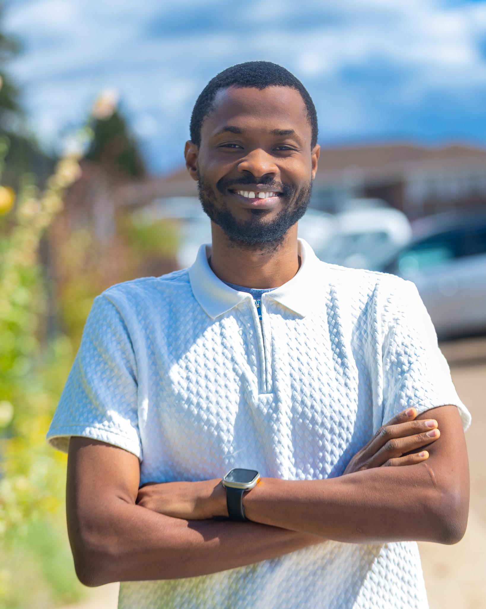

Runge–Kutta DG Methods
Stability and error analysis of high-order discontinuous Galerkin discretizations combined with explicit Runge–Kutta time integration.
Numerical Analysis · Scientific Computing
I develop and analyze high-order numerical methods for partial differential equations, with particular emphasis on discontinuous Galerkin methods, Runge–Kutta time integration, stability, accuracy, and efficient scientific computation.
Research focus: discontinuous Galerkin methods · high-order time integration · stability and error analysis · Fourier analysis

Recent research and professional activity.
My work lies at the intersection of numerical analysis and scientific computing, with a focus on rigorous mathematical analysis of high-order methods for time-dependent PDEs.
Stability and error analysis of high-order discontinuous Galerkin discretizations combined with explicit Runge–Kutta time integration.
Fourier analysis, CFL behavior, accuracy, and stability effects of filtering in Runge–Kutta discontinuous Galerkin methods.
Efficient time-stepping strategies for PDE discretizations, including exponential time differencing, local time stepping, and compact high-order formulations.
Selected journal work and preprints.
Filtered RKDG Methods: Fourier Analysis for the Second-Order Case
Teaching experience across calculus, differential equations, algebra and trigonometry, and foundational mathematics.
| Course | Title | Term(s) |
|---|---|---|
| MATH 238 | Applied Differential Equations I | Spring 2024–Present |
| MATH 126 | Calculus II | Fall 2024 |
| MATH 227 | Calculus III | Fall 2023 |
| MATH 125 | Calculus I | Spring 2023 |
| MATH 115 | Algebra and Trigonometry | Fall 2022 |
Selected presentations and professional meetings.
Software and computational tools used in numerical analysis, simulation, and research.
Academic preparation in mathematics, numerical analysis, and applied mathematical sciences.
Benjamin Atawiah · Department of Mathematics · The University of Alabama · Tuscaloosa, AL 35487